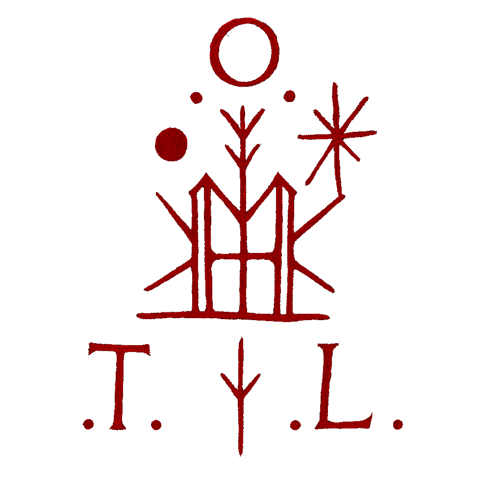

Sanctum Voluptatis — Official Key
All authentic notices and releases from ∴S.V∴ - A Path through the Threshold of the :. O.T.L .: - are signed with the key below.
Fingerprint: 72D3 851F 4174 A6DB 71CF 1876 B49D 04C2 D01E 427B
Official contact: sanctumvoluptatis@proton.me
Verify signatures with this key before trusting any release or message.